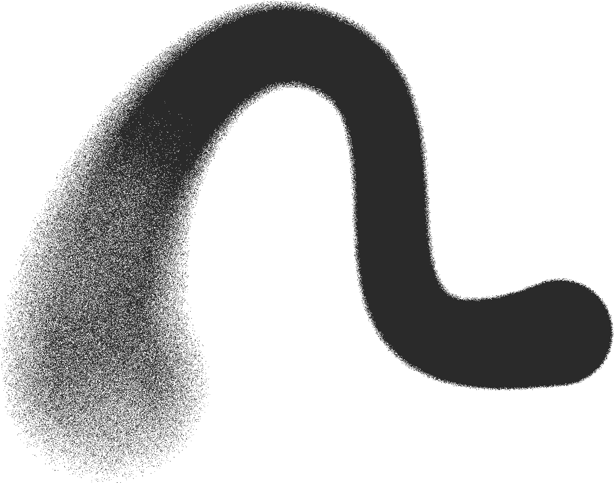
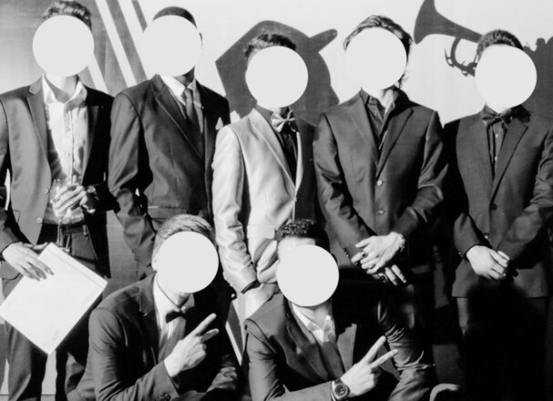

WHAT IS
r0t?
r0t is a developing curatorial project exploring the intersection of underground music, internet culture and emerging creative scenes.
Through events, collaborations and artistic initiatives, r0t aims to create spaces where artists, sounds and communities can meet.
The project develops through a network connected between Paris, Beijing and Tokyo.

THE SOUNDS
r0t focuses mostly on artists connected to hyperpop, underground rap, alternative electronic and underground club music,
while exploring a broader spectrum of sounds and emerging artists.
FORMATS
CONCERTS, DJ SETS AND HYBRID LIVE PERFORMANCES BRINGING TOGETHER UNDERGROUND ARTISTS AND LOCAL SCENES.
COLLABORATIVE CREATION AND RELEASE OF MUSIC BETWEEN ARTISTS FROM DIFFERENT SCENES.
PROJECTS CONNECTING MUSIC WITH OTHER CREATIVE FIELDS SUCH AS FASHION, PHOTOGRAPHY, DANCING.
ARTIST INTERVIEWS, WORKSHOPS, LISTENING SESSIONS & MORE.
NETWORK

r0ttencore is a developing collective initiated by friends based between Paris, Beijing and Tokyo.
Growing up and working across these international cultural environments, the project emerged from a shared interest in music, underground culture, fashion and contemporary creative scenes.
Through personal networks and collaborations, r0ttencore brings together artists, musicians and creatives from different backgrounds, building connections between local communities and wider international scenes.